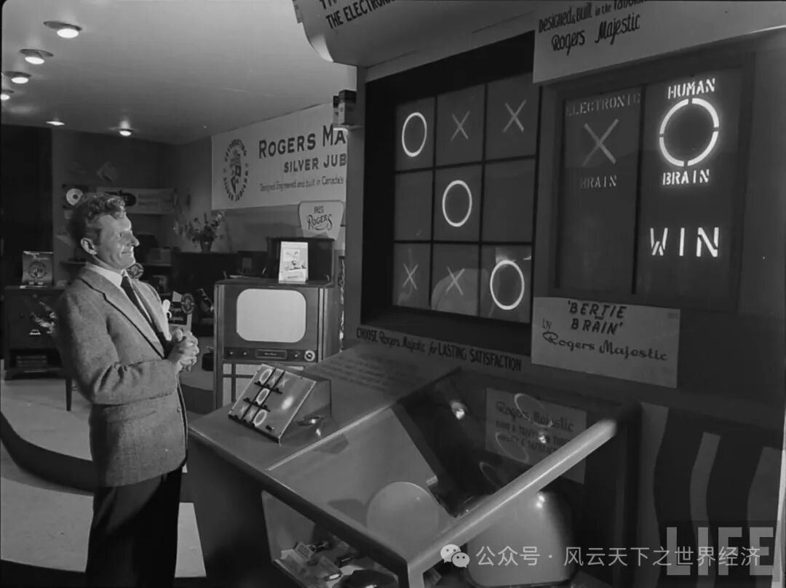
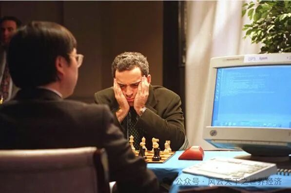
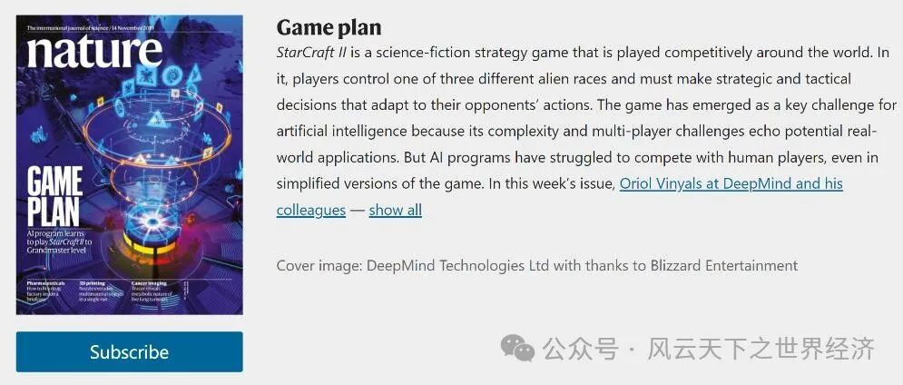
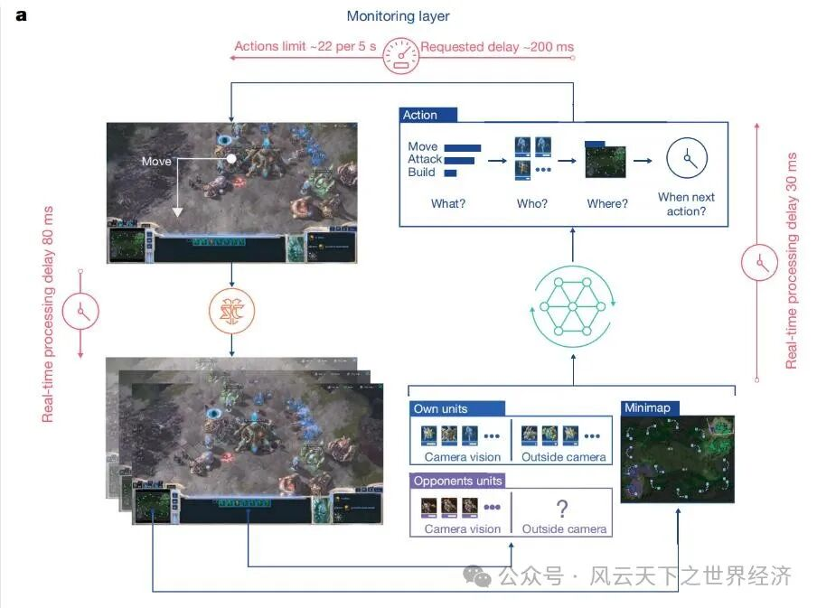
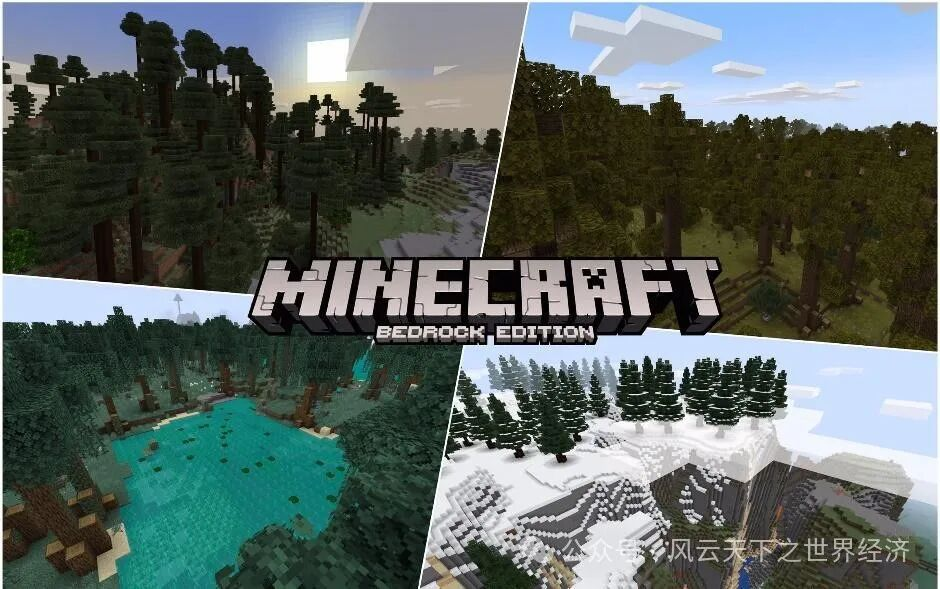

“妈妈，我想创立一家公司。”
> “你们具体是做什么的？”
“我们研发3D图形芯片，人们可以用它来玩电子游戏。”
> “你为什么不去找一个正经的工作呢？”
这是25年前，英伟达（NVIDIA）创始人黄仁勋与她的母亲之间的一段对话。谁也没有想到，这家当年主营电子游戏显卡的硬件公司市值会达到2万亿美元，超越了谷歌和亚马逊，成为全球第4大公司。而被视为“玩物丧志”的游戏产业，如今也成为了人工智能产业的催化剂。
其实，电子游戏与人工智能之间的关系比人们想象中的更加密切。80年前，二者几乎同时诞生，电子游戏不仅是人工智能的研究目标，也向社会展现了人工智能的强大能力。因此，人工智能在社会影响力上的突破，大部分都与电子游戏有着莫大联系。其中的典型案例，就是20世纪末在国际象棋游戏上打败卡斯帕罗夫的 Deep Blue，以及在2016年在围棋游戏上击败李世石的AlphaGo。
如今，游戏人工智能的研究已经成为了学术界新的热点：1971年到2015年间，与电子游戏相关的人工智能研究论文数量不到1000篇，但从2015年到2022年的7年里，相关论文数量就达到1625篇，其中17篇成为《Nature》和《Science》的封面文章。
电子管与示波器
“机器人不得伤害人类，或坐视人类受到伤害；机器人必须服从人类命令，除非命令与第一定律发生冲突；在不违背第一或第二定律之下，机器人应当保护自己。” ——《我，机器人》
早在上世纪40年代，科幻小说家阿西莫夫就在其短篇小说集《我，机器人》中提出了著名的“机器人三大定律”。这三大定律既是人类对人工智能最初的想象，也在未来成为了科学家研发人工智能的道德准则和行动指南。1950年，计算机之父图灵发表了开创性的《计算机和智能》一文，描述了构建人工智能机器以及测试其智能的具体方法。这标志着人工智能成为了一门正式的学科。
同一时期，电子游戏也应运而生。
在1950年加拿大国家展览会上，一台巨大的机器引起了人们的注意。这台机器将近4米高，有一个用来输入信息的键盘，以及三块屏幕。屏幕上分别显示着游戏画面、“Electronic Brain”以及“Human Brain”。这正是全世界第一款电子显示互动井字棋游戏“Bertie the Brain”。参与者们需要挑战机器内运行的人工智能程序并获得胜利。
这台机器的发明者是多伦多大学的凯特博士。他认为开发一款应用于电子游戏的人工智能程序是一种更加直观、易于理解的方式向社会公众展现计算机的性能与学者的研究成果。于是，凯特博士的团队就研发了这款井字棋游戏机。这台机器在展会上大受欢迎，观众们在机器前排起了长队，凯特则守候在机器旁根据观众的年龄调整难度。《生活》杂志还为经过多次试玩最终挑战成功的著名喜剧演员丹尼·凯拍摄了照片。

丹尼·凯与Bertie the Brain
在井字棋后，人工智能与机器学习的先驱亚瑟·李·塞谬尔将目光投向了国际跳棋。塞谬尔选择国际跳棋是因为该游戏尽管规则相对简单，但却有着深度的策略，能够展现计算机的强大能力和“机器学习”最终成果。他在1959年发表《基于跳棋游戏对机器学习的研究》中构建了世界上第一个能够成功进行“自我学习”的人工智能程序，并成为了未来机器学习路线的前身。
从电子管与示波器的时代开始，几乎同时诞生的人工智能与电子游戏就有着千丝万缕的关系。一方面，游戏启发着人工智能研究的先驱者们对于智能的想象，帮助他们确立研究目标和锚定任务；另一方面，电子游戏这一特殊媒介，也极佳地展现出了人工智能的强大潜力。
“42”
“生命、宇宙以及任何事情的终极答案=42”——《银河系漫游指南》
在英国作家道格拉斯·亚当斯所写的系列科幻小说《银河系漫游指南》中，一个具有高度智慧的跨维度生物种族为了寻找宇宙终极问题的答案，制造了一台超级电脑——“深思”（Deep Thought）来进行计算。“深思”花了750万年来计算和验证，最后得出了“42”这个答案。
在现实世界中，属于人类的超级电脑“深思”在1985年由卡内基梅隆大学的计算机博士许峰雄创造。当时，许峰雄团队被IBM公司雇佣，从事国际象棋人工智能的开发工作。作为一名科幻小说迷，许峰雄将自己开发的人工智能命名为“深思”，以致敬《银河系漫游指南》。“深思”曾在1989年两次挑战国际象棋世界冠军卡斯帕罗夫，但均以失败告终。于是许峰雄团队继续改进他们的超级计算机，并与1993年将其重新命名为“深蓝”（Deep Blue），该名字是Deep Thought和IBM公司蓝色LOGO的组合。
1997年，IBM公司的“深蓝”卷土重来，再次挑战卡斯帕罗夫。双方在纽约曼哈顿的一家酒店内酣战6局。在首局比赛中，卡斯帕罗夫执白先行，经过3个多小时的苦战击败“深蓝”，力拔头筹。在次日举行的第二局比赛中，“深蓝”却以凌厉的攻势和明显的优势战胜卡斯帕罗夫，扳回一局。在接下去的第三、第四和第五局比赛中，双方下得异常激烈，鏖战数小时，最终均战成平局。最后一天举行的第六局比赛，“深蓝”充分利用执白先行的好处，一路强攻，仅用一个多小时，双方仅走19步，就让卡斯帕罗夫俯首称臣，取得了决定性的胜利。此役作为计算机战胜人类的开端，为人工智能的从业者带来了更大的想象空间。

1997年5月3日，卡斯帕罗夫与“Deep Blue”对弈
仿生人会梦见电子羊吗？
“感觉就像一个有血有肉的人在下棋一样，该弃的地方也会弃，该退出的地方也会退出，非常均衡的一个棋风，真是看不出出自程序之手。”——柯洁
21世纪至今的游戏人工智能，开始迈入发展的黄金时期。其特征就是思考方式越来越像人类。与“深蓝”时期人工智能采用的“穷举法”不同，这一阶段的游戏人工智能开始采用“深度学习”的方法，用真正的人类思维，在各种更加复杂困难的游戏中战胜人类。其中最具有代表性的，就是掀起人工智能第三波浪潮的里程碑事件：2016年，由DeepMind研发的人工智能AlphaGo在公开赛中连续击败了李世石、柯洁等人类顶级围棋选手。
围棋作为完全信息游戏难度的天花板被攻破后，人工智能的研究者转而将目光投向了不完全信息游戏（玩家并没有获取所有信息的游戏：麻将、德州扑克等）上。在不完全信息游戏中，玩家需要通过已有的信息推算未知的信息，甚至判断对方泄露的信息是否是故意诱导等等，游戏中的博弈策略非常丰富。因此，在不完全信息游戏中打败人类，被视为人工智能的另一个重要挑战。
随着深度学习技术的逐渐成熟，两类更加复杂的不完全信息游戏进入了人们的视野，即以星际争霸为代表的即时战略（Real-time Strategy ,RTS）游戏，以及以Dota为代表的多人在线竞技（Multiplayer Online Battle Arena ,MOBA）游戏。在这两类游戏中存在遮挡玩家视线的战争迷雾，因此玩家并不能够获取全局信息。与棋牌不同，在这类游戏中，玩家一方面必须不断地执行决策，另一方面需要同时控制多个甚至数百个不同的单位，因此可能性空间更大。
AlphaGo下围棋，可能的下法总共有种，这个数字比整个宇宙中的原子数都多。但这对于星际争霸来说简直是小儿科。星际争霸在每一秒钟都有种可能的操作——这意味着一场完整的游戏所需要做出的决策数量几乎无法计算。

DeepMind发表《Nature》封面文章
2018年，AlphaGo的开发团队DeepMind发布了星际争霸游戏人工智能系统“Alpha Star”。训练“Alpha Star”只花了44天，开发者估计这相当于每个AI代理都玩了200年星际争霸2。2018年12月10日，“Alpha Star”以5：0战绩打败了职业星际2选手TLO，然后经过更多训练后，在12月19日再次以5：0的完胜战绩血洗了职业选手MaNa。至此，“Alpha Star”成为了第一个在星际争霸中击败顶级玩家的人工智能。同时，DeepMind团队在《Nature》发表封面文章《Grandmaster level in StarCraft II using multi-agent reinforcement learning》，进一步介绍了“Alpha Star”的技术细节，并指出该人工智能也可以适用于其他复杂决策领域。

“Alpha Star”技术原理
同时，另一家人工智能巨头OpenAI则将目光投向了多人在线竞技游戏Dota2。2019年，“OpenAI Five”与Dota2的世界冠军队伍OG进行了5V5团队对抗，并获得了胜利。同时，OpenAI发布了《Dota2的大规模深度强化学习》一文，展示了他们在构建Dota2游戏人工智能过程中的理论创新。这项技术突破也为3年后chatgpt的横空出世奠定了坚实的理论基础。
“真正的活人和物品之间，还有什么区别？”作为美国科幻小说作家菲利普·迪克最重要的作品，《仿生人会梦见电子羊吗？》（后被翻拍为电影《银翼杀手》）在一个狩猎仿生人的科幻侦探故事下，进行了一场关于人何以为人、以及何为世界真实性的哲学探讨。虽然目前人工智能算法大多依赖高质量的海量数据，需要的功率也远高于人类大脑的能耗水平。但不可否认，一个个人类为之骄傲的领域正在被人工智能所攻克。随着机器学习和神经网络的复杂性增加，AI可能会发展出对自身行为的理解，也就是所谓的“自我意识”。人类如何找到与AI协同工作、实现最大的共同利益的最佳方式，将成为未来研究的主要课题。
“我不是机器人”
阳光明媚的一天下午，你如往常一样在电脑上使用即时通讯软件和客户进行着有关业务安排、近期计划等的沟通。你们正在协商预算，讨论方案的修改意见。你不觉得这有什么值得注意的——直到一个念头冒出来：他是机器人吗？
不，这不可能。你摇摇头。机器人只会像你写的To Do List一样把需求按照一二三的格式列出来。它怎么可能和你聊得有来有往，甚至读懂你的一个双关并做出颇具“商务风”的回复？很快，你便把这个有些无厘头的怀疑抛诸脑后。
不妨让我们再想一想这个问题。图灵于1950年提出了广为人知的“模仿游戏”（Imitation Game，也即图灵测试）：受试者写下问题，交由多名人类和一台机器人做出回答，实验者通过受试能否正确判断出机器的回答来检测机器是否达到模拟人类智能的程度。很久以来，没有人会怀疑自己能否辨认聊天机器人和真人，因为前者的特征实在太过明显——程式化的回复，设定好的语用框架，以及在修辞上固有的理解和表达短板；所有这些特征都使得它和一个活生生的人有着显著的差异。然而，随着实现人工智能所使用的模型的愈发成熟，这个问题在当今却越来越“成问题”。2014年6月7日，由英国研究者开发的尤金·古斯特曼（Eugene Goostman）成为历史上第一台通过图灵测试的聊天机器人。更为众所周知的ChatGPT则让我们第一次直观地意识到AI已经可以达到怎样的拟真程度。这意味着，未来和我们在互联网上打交道的人，可能只是一台机器。
倘若在现实交流中难以识别出机器人会让我们心生一丝对生活真实性的不安，在“虚假的”电子游戏中是否会松一口气呢？毕竟，当我们玩游戏的时候，我们知道“一切都是假的”：游戏程序里的角色不会有喜怒哀乐，也不会影响到你的现实生活。尽管游戏开发者将它们塑造得个性鲜明、活灵活现，但我们知道，只要我们想，就可以找出底层代码、文本库，并理解这些程序和游戏中角色表现的联系。这样的模型被称为“模式匹配”（Pattern Matching），这也是长期以来游戏中的角色AI的底层逻辑——通过识别“玩家角色”的行动，程序让这些“非玩家角色”（Non-player Character，NPC）们定向地做出反馈。在技术上，这些代码都是预设的脚本，NPC们拥有预先设置的行为模式和路径，被规定了所有与玩家角色可能的互动方式。
上世纪80年代，当电子游戏的主要表现形式还是文本和标符制图时，NPC同样也只是程序中的数串负责在屏幕上输出文字的代码，实现这一效果也只需要使用简单的条件命令语句（if-then-else）即可。进入21世纪，随着游戏画面和机制愈发精细化、复杂化，NPC也亟需适应这些变化。人工智能技术对NPC做出的第一次改造便是对模型进行优化。例如，由CD Projekt RED开发、于2015年发行的大型ARPG（动作角色扮演游戏）《巫师3：狂猎》（The Witcher 3: Wild Hunt）中，开发者使用基于行为树模型的脚本来控制游戏内角色的日常活动，使得每个NPC都有自己的“日常规律”，包括白天前往户外的哪些地点、傍晚集中于哪些建筑等。这些细节上的处理大大增强了游戏世界的真实性和沉浸感。然而，NPC们的底层逻辑仍然是一致的：一切都是预先编撰好的剧本，它们只是陪同玩家的有限的“工具人”。
2024年4月，NVIDIA释出了一部未发行游戏的一段Demo（测试版本），玩家在其中扮演一名间谍，需要在酒店大厅通过语音和游戏中的NPC进行聊天，骗取到目标人物的房间号码。NVIDIA表示，游戏中的所有NPC都会根据玩家的对话实时生成回复和面部表情，并做出相应的动作，而玩家需要根据场景中所有可获取的信息，尽可能获取关键NPC的信任，以达成目的。这一次，人工智能对NPC进行了第二次、也是更彻底的一次改造：NPC们第一次跳出了既定的剧本，变得更加“不可捉摸”，更加“像人一样”。NVIDIA声称，为达成游戏目标，“理论上有无数种方式”，而在连接互联网、存在多名玩家同时登入的情形下，我们可能真的无法辨认谁是人、谁是机器。毕竟，当对方告诉你“我不是机器人”的时候，你甚至连判断都不能优先做出——你怎么能向对方证明自己的“清白”呢？
NVIDIA联合Inworld AI制作的游戏内实时语音互动NPC
游戏——永不重复？
你是一名玩家，你打开电脑上一款曾让你深深共鸣、不能自拔的游戏，却只是盯着画面数秒后便杳无兴致地关掉：你对它已经太熟悉了。在结束了一次完整的体验后，还有什么必要重复经历一遍呢？毕竟，你深谙经济学的边际效用理论——游戏，只有第一次玩的时候才是最好玩的。
能否开发一款“永不重复”的游戏呢？这个朴素的想法同电子游戏本身的历史一样悠久。游戏开发者们为实现这个想法做出的尝试便是程序化内容生成（Procedural Content Generation，PCG），这是对于通过用户输入即时地生成游戏内容的一系列算法的统称，其逻辑基础是对已有素材进行归纳推理，再通过演绎推理生成新的内容。最知名的例子便是已被微软收购、于2009年发行的现象级沙盒游戏《我的世界》（Minecraft）中那无限广阔、永不重复的随机地图生成。而将这项技术运用到极致的则是由Hello Games开发、于2016年发行的沙盒游戏《无人深空》（No Man’s Sky）。在这款游戏中，环境、地形模型、生物模型、贴图、甚至音乐全部采用PCG技术，随着玩家的探索即时地生成高度特异化的游戏内容，同时各要素之间保持着高度一致的美术风格，极大提高了游玩过程中的观赏性和沉浸感。

电子游戏《Minecraft》的无限随机地图生成
2020年，程序内容生成国际研讨会（Procedural Content Generation Workshop）对近十年来在游戏PCG领域最具影响力、最流行的诸多研究课题进行了梳理，认为机器学习和深度学习目前仍然是PCG研究在算法方面的主流范式，更先进的算法如人工进化和声明式编程等则预示着机器学习未来应用的发展方向。而在AI前沿技术的实际应用中，人工智能生成内容（Artificial Intelligence Generated Content，AIGC）正逐渐显露出其在PCG领域潜在的广泛应用前景。
AIGC的技术原理是生成式对抗网络：两套神经网络模型在其中相互对抗，一方负责生成、一方负责判别，生成的一方不断创造内容，判别的一方基于是否合乎真实性的要求不断给予反馈，双方的进程不断循环，直到生成人类难以区分真假的内容为止。这也是诸如Midjourney、Suno等图像和音乐生成工具能够创造如此栩栩如生、颇具风格却又合乎基本审美偏好的作品的缘由所在。这项技术也第一次让程序化内容生成真正地“生成内容”，而非仅仅是进行特征的无限次排列组合。
我们会期待这项技术为游戏开发带来怎样的变革？这个问题暂且没有固定的答案，但一些方向或许正逐渐清晰：定制化的体验，不可重复的经历……这样的游戏，究竟是游戏，还是无法重来的生活？
结语
在人工智能与游戏行业的交汇点，我们目睹着科技的无限可能性与源源不断的创新。人工智能凭借其愈发先进和成熟的算法不断优化着游戏体验，也让玩家们得以沉浸于更加丰富、个性化的虚拟世界之中。我们有理由相信，人工智能与游戏仍将继续相互成就，并带动相关领域和行业的蓬勃发展。